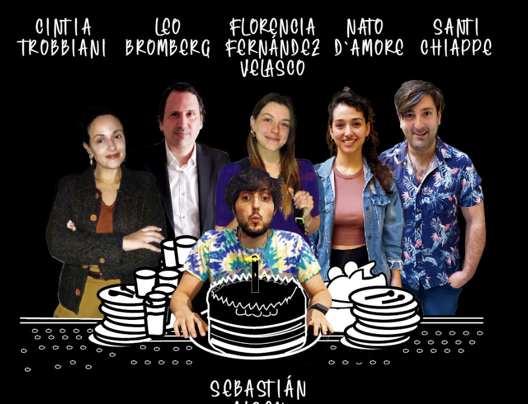

Obras destacadas

Qué hermoso era todo antes
Una tragicomedia sobre personajes atrapados en sus deseos no cumplidos. Solo queda observar... y sonreír.
Ver másNO ME MUERO
NO ME MUERO es un espectáculo hecho de fragmentos, pedazos de un existir. Trabajo riesgoso el desear actuar, sin embargo, abre camino para vivir otras vidas, para olvidar el presente que agobia, para jugar a ser otra, otras..
Ver más

DESEOS DE MATI
En su cumpleaños, Santi decide salir a buscar los deseos en lugar de sólo pedirlos.
Ver más